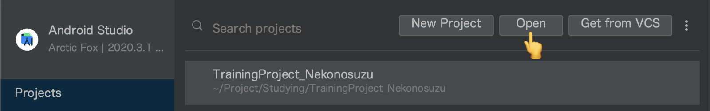

開発環境の構築
Kotlin を用いた開発を行うための環境構築について記載します。
ゴール
- サンプルプロジェクトをclone する
- clone したサンプルプロジェクトを Android Studio で読み込む
- SampleTest を実行し、welcome メッセージを確認する
- Sample.kt を編集し、hello world を出す関数を定義する
- hello world を出す関数を SampleTest クラスから呼び出す
想定する事前準備
以下はあらかじめ用意されていることを想定
- ターミナルで git コマンドが実行できるようになっていること
- Android Studio (バージョン 4 以降) がインストールされていること
サンプルプロジェクトを clone する
- 本研修で使用するサンプルプロジェクトを用意しておいた
- ターミナルを開き、任意の位置に clone する
- 以下のようなコマンドを打つ
$ git clone https://github.com/access-company/KotlinTraining.git
- 以下のようなコマンドを打つ
- 正常に完了すると、リポジトリのソースコード一式がダウンロードされる
clone したサンプルプロジェクトを Android Studio で読み込む
- 無事に clone は済んだだろうか
- 次に clone したソースコードを Android Studio で読み込む
- Android Studio を起動し、「Open an exisiting Android Studio project」を選ぶ

↑ Android Studio を開いたところ
- ファイルエクスプローラが起動するので、先程 clone したところを選ぶ

↑ clone したサンプルプロジェクトを選ぶ (アイコンが緑の丸っぽいのを選ぶ)
- 選ぶと自動的にビルドが始まり、必要なもののダウンロード等が始まったりする
SampleTest を実行し、welcome メッセージを確認する
- SampleTest クラスを見つけてみよう
- 見つけたら、右クリックで選択し、
Run 'SampleTest'を選択 - welcome メッセージが出るかな
Sample.kt を編集し、hello world を出す関数を定義する
- Sample.kt を探し、以下のようなコードを書いてみましょう。
fun hello() {
println("Hello World!")
}
hello を SampleTest クラスから呼び出す
- SampleTest を編集し、先ほど Sample.kt に定義した
helloを呼び出してみよう - うまく呼び出せただろうか